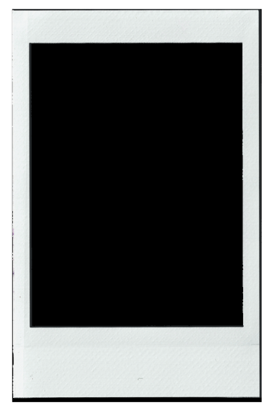
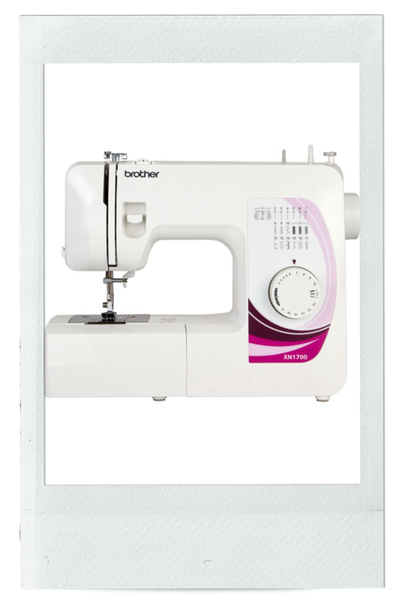

The Professor

Black Cat

Red rose

Melody Maker '98

Cologne Cathedral

Peacock

Sewing machine

. . .
These items may have been in our posessions for a long time but they never loose their meaningfulness and their emotional value. Let's explore with us what "old" items we find the most precious. Click on cards to reveal the stories behind objects!
The Professor
Black Cat
Red rose
Melody Maker '98
Cologne Cathedral
Peacock
Sewing machine
. . .
1948 copy of "The Professor" — Lydia
A small ornament passed down from my Gran, containing a black cat holding a max factor perfume from the 1950s. I love this ornament as it reminds me of happy times at my Gran's flat, and I also now own a real black cat! — Lucy
It's been 2 years and that rose is hail and hearty, it symbolises the love I and my partner have for each other. It's going to die one day but our love will keep blossoming! — Christabel
I got this newspaper as a birthday present from my friend. It dates back to 1998, the same year I was born! Even the same month, January, only 16 days earlier than I first saw this world. I love collecting music memorabilia, so whenever I hold this Melody Maker in my hands, it makes me happy! It is a special New Year's issue that also has a "Readers' Poll" where people voted for their favourite artists — who had the "haircut of the year"? (Keith Flint!) Who was "the sexiest man"? (Nicky Wire...) "Woman of the year"? (not surprisingly, Björk!) What was "the most irritating record"? ("I'm a Barbie girl, in the Barbie world...") "Best live act"? (Radiohead!) — just to name a few. It's a very fun read with a lot of familiar faces. And, well, Thom Yorke on the cover is a personally special bonus (he was also voted "man of the year")! — Dominyka
This artwork of the Cologne Cathedral was gifted to me by my godmother. It has since always hung in my room and I love looking at its simple yet powerful design. My godmother comes from Cologne and has showed me this historical city with its wonderful traditions (like Carnival) throughout my life. The cathedral itself was built between 1248 and 1880 (632 years construction time) and welcomes many visitors today. I myself, have enjoyed visiting the stunning cathedral and particularly love the stained glass windows! — Victoria
This lovely peacock was gifted to me for Christmas from my best friend and partner. I received this gift a few years ago and It was a great surprise because I am usually very picky with gifts. Peacocks bring good fortune and wealth to the owner and represent rebirth and beauty in many cultures. — Niki
The sewing machine represents something old. This is something I did as a child and lost somewhere along the way. I decided to revive my love for creativity and making things by getting myself one. — Lucy
If you would like to share "something old" of
yours, please go here to submit your picture! Don't forget to add your name and a brief description of the object. Once we review, it will be uploaded to
this gallery!